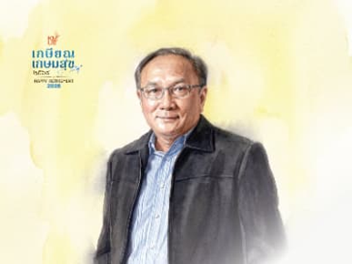

ขอแสดงความขอบคุณและเชิดชูเกียรติ รศ. ดร.วิบูลศักดิ์ วัฒายุ
ขอแสดงความขอบคุณและเชิดชูเกียรติ รศ. ดร.วิบูลศักดิ์ วัฒายุ อาจารย์ในหลักสูตรวิทยาการคอมพิวเตอร์ประยุกต์ ผู้เกษียณอายุในปี พ.ศ. 2569 ที่ได้อุทิศแรงกาย แรงใจ ความรู้ และประสบการณ์อันทรงคุณค่า เป็นกำลังสำคัญของภาควิชาคณิตศาสตร์ และมีบทบาทอย่างยิ่งในการขับเคลื่อน พัฒนา และวางรากฐานหลักสูตรวิทยาการคอมพิวเตอร์ประยุกต์มาตั้งแต่เริ่มต้น ตลอดระยะเวลาการปฏิบัติงาน ท่านได้ถ่ายทอดทั้งความรู้ทางวิชาการ ประสบการณ์ และความมุ่งมั่นให้แก่นักศึกษา คณาจารย์ และเพื่อนร่วมงาน ตลอดจนมีส่วนสำคัญในการพัฒนาหลักสูตรให้เติบโตและก้าวทันต่อการเปลี่ยนแปลงของศาสตร์และเทคโนโลยีอย่างต่อเนื่อง คุณูปการและความทุ่มเทของท่านนับเป็นส่วนสำคัญที่ทำให้หลักสูตรวิทยาการคอมพิวเตอร์ประยุกต์เติบโตอย่างมั่นคงมาจนถึงปัจจุบัน ในวาระแห่งการเกษียณอายุ ขอขอบพระคุณสำหรับทุกสิ่งที่ท่านได้สร้างสรรค์และมอบไว้ให้แก่ภาควิชา หลักสูตร และนักศึกษาหลายรุ่น พร้อมทั้งขออวยพรให้ท่านมีสุขภาพแข็งแรง มีความสุข และพบกับความสำเร็จในทุกเส้นทางของชีวิตหลังเกษียณ โดยคุณค่าและคุณูปการที่ท่านได้สร้างไว้จะยังคงเป็นส่วนหนึ่งของความทรงจำและรากฐานสำคัญของหลักสูตรสืบไป
Read more ↗